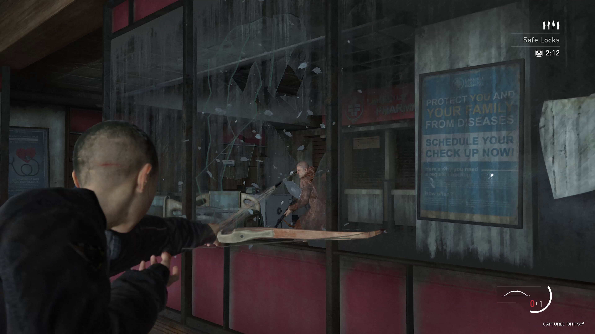

The Last of Us Part II Remastered launches January 19, and we here at Naughty Dog are so thrilled to offer new and returning players the definitive way to experience Ellie and Abby’s story. Coupled with new behind-the-scenes features and new modes, Part II Remastered is intended to let players dive deeper into the story and gameplay than they ever have before.
Ahead of launch later this week, we’re excited to showcase a new features trailer, that digs a little further into all the ways The Last of Us Part II Remastered enhances the original release.
For returning players who have been waiting to jump into the remastered version the $10 upgrade will be available as Part II Remastered launches! If you’re an existing digital or physical owner of The Last of Us Part II on the PlayStation 4 console, head on over to the PlayStation Store as soon as Part II Remastered is available to purchase the upgrade. If you own The Last of Us Part II via a disc, you must insert disc copies into your PS5 via a disc drive to download and play the digital version of The Last of Us Part II Remastered. You’ll be able to import existing saves from the original PS4 game and pick up from where you left off. Existing Trophy progress will also migrate to The Last of Us Part II Remastered.
No Return mode
Speaking of trophies, Part II Remastered’s exciting new single-player roguelike survival mode No Return comes with its own set of new trophies that should encourage you to dig into everything the mode has to offer. With a roster of 10 characters, including some never before playable in the world of The Last of Us, new gameplay mods, and so much more, we’re thrilled for all of you to jump into this new addition to the world of The Last of Us. No Return also integrates a number of Part II Remastered’s accessibility features, and combined with the ability to create custom runs that allow you to take on runs as you see fit, we look forward to hearing about your time with No Return.
And before you kick off your first No Return run, be sure to check out our primer on the roguelike survival mode new to The Last of Us Part II Remastered. We can’t wait to see how your Daily Run scores stack up against others on the leaderboards!
Guitar Free Play and more features
While No Return is designed to let players engage with The Last of Us Part II Remastered’s combat on a deeper level, it’s one of several new features included in Part II Remastered. Be sure to watch the features trailer above if you haven’t already for a rundown of the full experience, which also includes Guitar Free Play. This mode will let you fully immerse yourself in our guitar-playing minigame while you play as Joel, Ellie, and The Last of Us composer Gustavo Santaolalla, and strum on the guitar, banjo, and steel resonator. Use FX pedals to modulate your performance, and test out your musical expertise with a fan favorite feature we’re so happy to spotlight in its own mode.
Part II Remastered features new additions to our suite of accessibility features, like Speech to Vibrations and Cinematic Descriptions, which we previously included in The Last of Us Part I. We’re excited to bring these features to the Part II Remastered experience, as we also are to introduce Speedrun Mode, which we also introduced in Part I. We’ve also made some additions like dynamic lighting, Frame Forward, Gaze Direction, and new frame and logo options for Photo Mode, and we’re delighted to share that Photo Mode will be usable in No Return as well, ensuring you can capture all the unexpected and thrilling moments from your runs.

Inside The Last of Us Part II Remastered’s development
We’ve also included features we hope will give you a deeper appreciation for the game and its development. That includes hours of new developer commentary accompanying cinematics from Neil Druckmann, Halley Gross, Laura Bailey, Troy Baker, Ashley Johnson, and Shannon Woodward. There are also three Lost Levels that show early-development slices of levels that didn’t make it into the final game. Those sequences - Boar Hunt, Jackson Party, and Sewers - include developer commentary explaining the intention and plans for these sections, which you can hear by activating them via interactables strewn throughout these levels.
To further offer a glimpse behind-the-scenes of The Last of Us Part II’s production, we’re excited to share that Grounded II: Making The Last of Us Part II will be added to The Last of Us Part II Remastered in a post-launch update, (release date TBA) and be available to watch online (release date TBA). A sequel to the original Grounded documentary for The Last of Us, the documentary will offer an in-depth look at Part II’s original development. Stay tuned to Naughty Dog’s social channels for updates on when to expect it.

In the meantime, be sure to check out our awesome Features trailer if you haven’t watched it already. As you dive into your adventure on January 19, let us know how you’re faring against No Return’s Daily Runs and share your Part II Remastered Photo Mode shots from the mode with us using the hashtag #NoReturn! We’ll be sharing some of our favorites in the weeks to come on the official Naughty Dog Twitter.
From all of us at Naughty Dog, we’re so thankful to those of you returning to this story with The Last of Us Part II Remastered; and to all of our new players – welcome! We’re grateful for your support in allowing us to craft experiences that mean so much to our team and to know how much they mean to you.